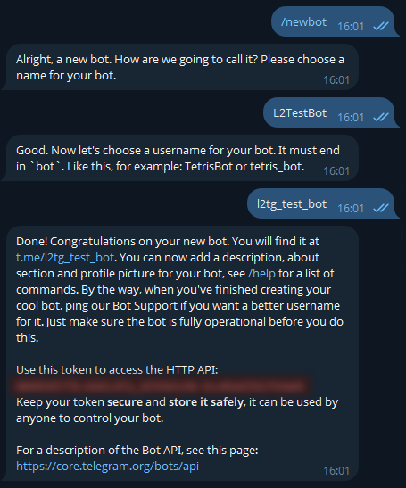

Telegram Bot Creation
This guide shows how to create a Telegram bot and obtain the credentials required by the Hub.
Create a bot with @BotFather:
1) In Telegram, search for @BotFather and start a chat.
2) Send /newbot and follow the prompts:
- Choose a public display name (can be changed later).
- Choose a unique username ending with
bot(for example,L2TestBot).
3) BotFather will reply with your bot token. Keep it secret.

Optional BotFather settings
/setdescription,/setabouttext,/setuserpic— improve your bot profile./setcommands— define command hints (the bot also presents menus; commands are optional)./setprivacy— leave privacy enabled for private chats; disable it only if you know why.
Bot supports four commands:
/menu- call main bot menu/start,/link- call initial routine/about- show custom server info
You can define them to be presented in the bot menu using /setcommands.

Configure the Hub with your bot data
- Open
config/hub.propertieson the Hub host and set:
# Bot username (without @)
tg.username=your_bot_name_bot
# Token from @BotFather (keep it secret!)
tg.token=1234567890:ABCDEF_your_token_here
# Comma‑separated list of admin chat IDs
tg.admin_chat_ids=1111111,2222222
Find your Telegram chat ID(s)
- Easiest method: open
@userinfobot, press Start, and it will show your chat ID. - Alternatively, add your bot to a private chat/group, send a message, and use any Telegram ID finder tool/bot to read the chat ID.
Security recommendations
- Never publish the token anywhere (including screenshots).
- Rotate the token in @BotFather with
/revokeif it ever leaks; then updatetg.tokenand restart the Hub. - Limit who can administer your bot using
tg.admin_chat_ids.
Next steps
- Return to the Installation and Configuration chapters, finish editing
hub.properties, and start the Hub. - Once the Hub is running, open Telegram and press Start on your bot to begin using it.